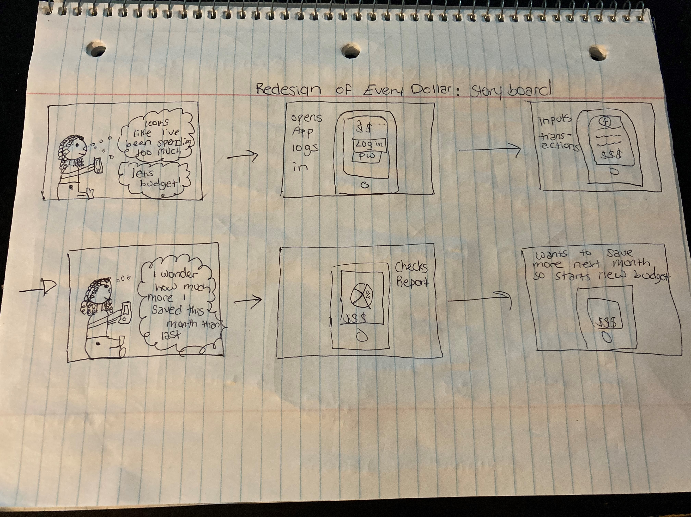

EveryDollar: Redesign
- Background: EveryDollar is a financial budgeting app based on Bestselling author and money expert Dave Ramsey. It has the ability to customize your budget every month, track spending with the objective of saving money.
- Objective: How can I design a native mobile budgeting tool to help customer understand and easily track their spending on a month-to-month basis?
- End User: For this project, I used myself; A person who wants to track spending to see where my money is going, so that I can save more.
- My Role: Solo project, so I owned the whole lifecycle from research to final prototyping

Current EveryDollar App & Pain-Points
PainPoints:
Myself:
User PainPoints:
Observations of Current UI
The green circle makes the spent money look positive. If it is a budgeting app to help the user save money, spending that close to their income amount or budget allotted is not a good thing. If tracking spent amount, the color label should indicate a negative sign when it is close to full amount.
Competitive Research:
Mint
Top Features:
- Free
- Automatically updates/categorizes transactions
- Creates a picture of spending in real time
- Users can add their own categories, track bills, split transactions and set budgets
- Alerts them when they’re exceeding maximum spending threshold
Cons:
- Would like a check box that says “Always categorize transactions from this vendor under this category”
- Would like the ability to select multiple transactions and categorize whole batch all at once
- Would like the ability to go to past months and show reports
- No ability to post date or backdate of when payments were made
Good budget
Top Features:
- Based on envelope system - portion out monthly income toward specific spending categories
- Allows multiple devices to access same account so partners/family members can share budget
- Manually add account balances
- Assign money toward spending categories
Cons:
- Would like a search area to look for specific transactions
- Doesn’t have auto-sync to bank account
- Set up is confusing and takes time
- No chat support
Clarity Money
Top Features
- Free
- Can link financial accounts
- Track spending and put into separate categories
- Other features such as subscription canceling and credit score monitoring
Cons
- Can’t set aside dollar amount each week
- Have to scroll through giant animations and icons before it gets to information wanted
- Doesn’t have the ability to split transactions
- Can’t edit category names
- Would like history of spend by category - would like to see which areas user is making progress in
PocketGuard
Top Features:
- Free
- Shows how much money is available after accounting for bills, spending and savings goal contributions
- Can very how much money is left “in my pocket” for the day, week or month
- Can track categories of spending; groceries, clothing, eating out
Cons:
- Needs to be real time updating
- Would like push notification of close to your budget
- Would like flexibility on categories
- When returns/other income come in - would like it to deduct from money spent
- Customer service takes forever to resolve issues
Competitor Research Analysis:
From doing the competitor research, I have gathered together the majority of the painpoints and positive aspects of each app so that it can be combined into the Everydollar redesign. Here are the list of aspects the user wants to see in a budgeting app:
- Flexibility of categories of spending
- Ability to see how much money is saved/left in pocket
- Alerts when exceeding maximum budget
- Allows joint account
- Needs auto-sync to bank accounts
- Search function to look up transactions
- History of budgets/month to month review
- Ability to select multiple transactions to input all at once
StoryBoard:
Personas
Empathy Map

User Research - Card Sort
A card-sort was performed to help create better information architecture so that it was based on what the users expect to see in the app. The card-sort had 10 participants all from different locations and with the background knowledge of budgeting. I did a closed card-sort, which meant I already had the categories I wanted to put in the app/ were already in the app and wanted to change the information architecture based on the data collected. Confirming assumption that users would rather see some items under a different tab/category than where EveryDollar already has it.

Site Map
Based on the card sort, I have put the items underneath the categoies based on the majority percentage where the participants would like to see them. Categories are color-coded for easier legibility.
User-flow:
Created a user flow for four tasks that a user would commonly use the app for:
- Task 1: Check to see how much money was spent this month compared to last.
- Task 2: Input transactions manually.
- Task 3: Check to see where more money can be saved based on exceeded budget.
- Task 4: Learn more about budgeting.
Brainstorm/Ideation
Lowfidelity Wireframes:


For each part of the app - I tried to create 5-7 wireframes that could work. After completing each wireframe, I went back and reviewed each one to see which would be easiest to use. There are a couple frames in which I could see the final design being, so I either put a check mark next to both or a question mark so that I can mock up both during the mid-fidelity wireframe stage to make a decision.
Mid-fidelity Wireframe:

The landing page was the frame which I was unsure of the direction to take. However, mocking it up in Figma, I decided to use the second design which helped determine the rest of the design for the app. The dark outline shows the decision made and the frames to follow.
High-Fidelity Wireframe:

Landing/Budgeting: Once opening the app, able to clearly see how much money is remaining in their budget for the month and week. You are able to switch to the budget frame with one click to see how budget is distributed. Can also go to a monthly overview that will give up-to-date statistics of the month.
Transaction frame - Able to clearly see in red, which budgets have gone over by how much with each manual entry. Users can also see how much of their budget is left in a specific category. There is an add button at the top to manually enter a transaction and then there is one at the bottom once the user is done scrolling so that they don’t have to go back to the top in order to add a transaction.


Under profile, the users are able to change their settings, turn on or customize notifications and add a bank account so that transactions are automatically pushed into the app, creating easier use and automatic budgeting.


From the landing page, the user has two separate resources; learning how to budget and about the app frame. This is also where the user would go to contact the creators if there are any issues with the app.
User Testing:
Three Scenarios were created for the user to perform their task:
5 people performed this user testing.
- Scenario 1: User has just purchased an item and wants to make sure they track it in their EveryDollar app - please open the app and try to add a transaction (no actual item will be added).
- Scenario 2: User doesn’t want to have to manually add transactions every time they buy something so they want to connect their bank account. Please open the app and try to link a bank account.
- Scenario 3: Users download a budgeting app to help keep them accountable and to learn to manage their money better. Find where you can learn more about budgeting.
Common Findings and Soltuions:
- Issue 1: Icons on bottom are confusing - Solution: Labeled each icon
- Issue 2: The "Learn to Budget" icon was not clear - Soltuion: Made larger for easier visibility
- Issue 3: Thought the "Learn to Budget" page would be under the "?" icon - Solution: Changed the about page icon to an "i" to signify information
Click here to see the final Prototype
Reflection:
I came into doing this app re-design with a more solid understanding of the design process as a whole. I really took the time to do my research, what was working for others, what wasn’t and what would make this app the best choice out of all of them for the user. I came to realize how important the first steps of the process are to build the foundation for your end product.
Doing user research and usability testing, I quickly figured out that narrowing down your participants to the specific target audience is extremely important. I noticed I asked someone who normally budgets, but uses an excel sheet as opposed to an app, was not able to pick up on certain nuances and terminology of the app that are generic to all budgeting apps; i.e. transactions and budget. I switched my recruitment to those who have used budgeting apps in the past and when doing a usability test with these participants, they were able to navigate my redesign fairly quick and was able to give feedback from an actual users point of view. The difference in having someone familiar with budgeting apps and someone who just budgets are vast and determines the outcome of my design.It’s also easy to assume icons are commonly used and even those who use budgeting apps may take a bit to figure out which each of the buttons signify - it’s really important to listen to them and hear their frustrations or even see in person, their hesitation to click on a button and the reason behind it. The UI of this product is important so the users can clearly understand how to use the app, which in turn, will help the continuation of use.